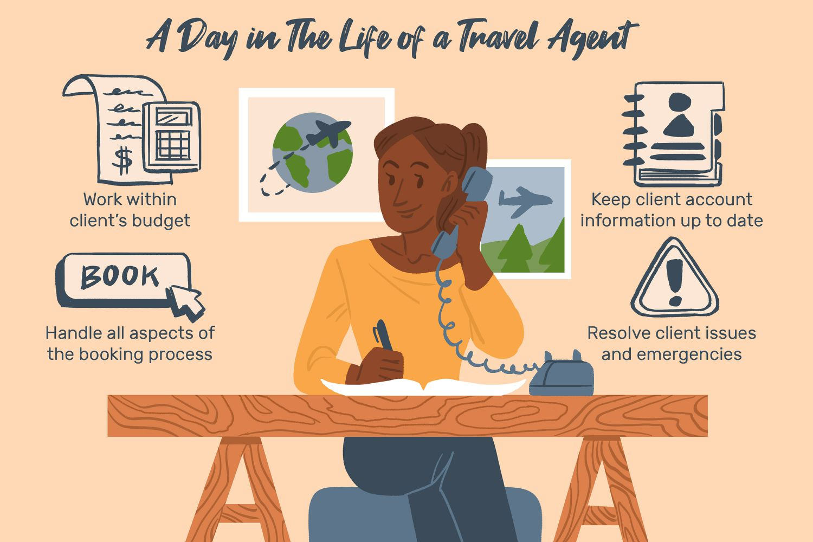

Travel agents
Travel agents are professionals who assist individuals and groups in planning, organizing, and booking travel experiences. They offer services like arranging flights, accommodation, transportation, and tours, often at competitive rates. With their expertise, they provide personalized travel itineraries, ensure smooth transitions between destinations, and help handle unforeseen issues during trips. Though online booking platforms have become popular, many travelers still rely on travel agents for complex or high-end vacations, expert advice, and access to exclusive deals.
Here are a few examples of how travel agents assist clients:
A couple might approach a travel agent to plan a luxurious honeymoon. The agent could arrange a personalized itinerary with private villas, romantic dinners, spa treatments, and exclusive tours in destinations like the Maldives, Santorini, or Bora Bora, ensuring every detail is tailored to the couple’s preferences.
Corporate Travel:
A business may hire a travel agent to handle logistics for employee travel, such as booking flights, accommodations, and transportation for conferences or meetings. The agent can negotiate corporate rates and manage last-minute changes or cancellations with minimal disruption to the schedule.
Group Tours:
A group of friends or family might use a travel agent to organize a multi-country tour in Europe. The agent would handle all aspects, including flights, train transfers, guided city tours, and accommodations, ensuring the group stays on schedule and enjoys a smooth, stress-free experience.
Adventure Travel:
A traveler seeking a unique adventure, like trekking in the Himalayas or a safari in Kenya, could use a travel agent specializing in adventure travel. The agent would arrange permits, guide services, accommodations, and ensure the traveler has all necessary safety and travel gear.
Cruise Packages:
A travel agent can help a couple find the perfect cruise vacation, recommending the best cruise lines, cabins, and excursions based on their preferences. They can often secure special perks like onboard credits or exclusive shore excursions not available through direct bookings.